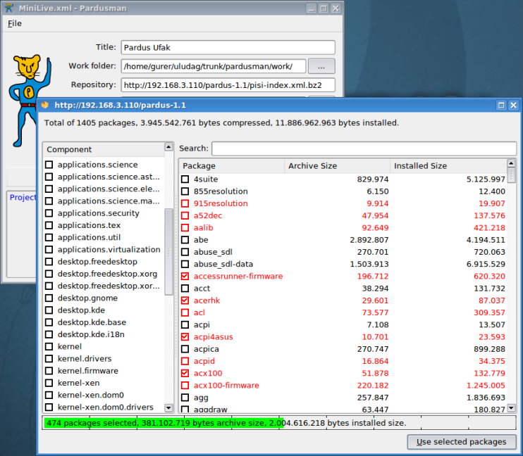
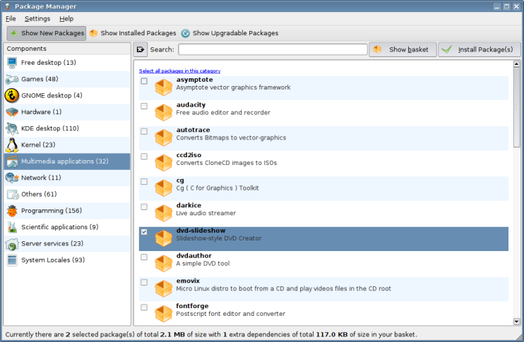

PiSi: One Step Further With Pardus
Faik Uygur
<faik at pardus.org.tr>
Abstract: With thousands of packages to maintain, most important part of any distribution is indeed its package management system. PiSi is the package manager of Pardus, written from scratch in Python. By writing another package manager, our purpose was not to reinvent the wheel but to create a new kind of wheel that takes distinctive ideas from existing ones with also easy integration and maintenance in mind.
You may download and try Pardus 2007 stable release to see PiSi in action from ftp://ftp.pardus.org.tr/pub/pardus/kurulan/2007
1 Introduction
PiSi (Packages Installed Successfully, as intended) is the package manager of Pardus. It is a tool used to build, install, upgrade or remove software packages of Pardus Linux distribution.Before deciding to write a new package system, we considered using the existing ones. Three years ago when the Pardus project was started, RPM had many problems. [1] One of the bigger problems was also not having one upstream to work with. Today, it is still a work in progress.[2]
As for DPKG, despite the fact that it had a much better state than RPM and having a single upstream, we had found its architecture hard to work on. Package preparation is cumbersome and complicated. Also some decisions like ``interactive package installation'' wasn't the ideas we would support for our distribution. The installation of any package should just be done without confusing the user with configuration internals of any package. The user should only choose and install the package. Configuration should not be a job for a package system. Moreover, as it was stated in a discussion made years ago, its code had become brittle.[3]
Also as they seem to be different in their nature, mechanism behind them and the ways are the same that were not satisfying us. We wanted something different.
The package manager in our mind should ease the package creation task for the package developers and should pave the way for working with binary packages. For the former, Gentoo's portage had some good ideas. So at the end we decided to design PiSi with all the advantages of the ones over each other and write it in Python. As all other components of the distribution were going to be written in Python, it would also be much easier to integrate to those parts and prototyping phase would be much much faster.
After having a prototype to work with, the development of PiSi went parallel with the development of the packages of the distribution. After a 6 months of work, with 10 people, we had created 600 packages and so the first stable release of Pardus. Now after a year from our first stable release, with 25 developers, we have a total of 1223 packages in stable branch of Pardus 2007 and 698 packages in our contrib repository.
2 Why PiSi?
To answer that question, we first need to define what a package is and what needs to be done for a package to be build, deployed and maintained by a distribution. For a package system, every phase of a package's existence from its maintainer's hands to the distribution users' machines have problems that need to be solved. There exists many package systems that solve these problems in different ways. What makes PiSi great lies in the simplicity and the efficiency of the solutions it provides.What is a Package?
There are two kinds of packages for PiSi: source and binary.A binary package is a container that consists of a collection of files and meta data. The meta data holds detailed information about the package, like homepage, version and runtime dependencies of the contained software, packager info, etc. The collection of files may be executables, libraries or other data files that are all parts of the contained software. PiSi binary packages have ''.pisi'' extensions and are actually zip archives. The files other than the meta data are compressed with another compression algorithm within the zip archive that is detailed later. Binary packages exist in PiSi binary repositories.
A source package minimally consists of an actions.py file that contains the setup, build and install instructions to create a binary package and a pspec.xml file that contains the other necessary informations, like build and runtime dependencies, conflicts, url or path of the source archive, etc. Source packages exist in PiSi source repositories.
Simple by Design
The most obvious part of PiSi is its simplicity. From its svn like console interface pisi-cli to its package building mechanism, it is very easy to grasp the inner workings and use effectively. It is so simple that when the first PiSi source code was revealed with some example source packages, it only took twenty-minutes for someone to contribute a new package to Pardus. And there were no documentation about the build system whatsoever. Xml based source packaging system is so intuitive and easy to grasp that it almost needs no documentation.Actually this was intentionally made that way. When you look at the current package managers, you can see that the variety of the tools for managing and the various package building helper tools, create an unnecessarily complicated system.
The first complication comes from the different tools that combined make the desired package management possible. The so called native package managers (DPKG, RPM, etc.) does the house keeping jobs and above them there exists many other wrapper tools (apt, dselect, urpmi, yum, aptrpm, etc.) for mainly handling the dependency resolution, package selection and installation issues.
But the main complication and difficulty comes from the various build helper tools, ad-hoc source specification formats and build scripts. The learning curve is steep for new developers.
PiSi architecture is quite different from traditional designs. Every functionality, related to package management like installing, building, dependency solving, fetching, validating, repository management is in the core of PiSi. On the other hand, package configuration is clearly separated from package management system and is delegated to COMAR. The configuration system is not limited with preremove or postinstall scripts; it is a much more advanced system that makes all the installed packages to be configured in a unique way by using the same COMAR API. A package may provide a configuration service script to be used as a configuration interface for itself. Configuration of packages can be done remotely or locally.
Traditionally, build scripts of packages are shell scripts. We think shell is ideal for simple tasks, like batch run of a series of commands with maybe some conditionals but nothing more. Shell scripting is awkward. It needs many other additional helper tools with their own syntax and usage. Moreover, debugging and maintenance costs are high.
When it comes to a complex task like building a package, you need conditional operations, string manipulations, iteration over series of data, and many other operations where you can all get from higher scripting languages also with additional advantages. For those reasons we have chosen Python.
Python is the choice of Pardus in all of the distribution's core components for its simplicity, flexibility and easing the maintenance advantages. YALI (Yet Another Linux Installer), the simple, fast and the pretty installer of Pardus [4]; Package Manager (the graphical frontend of PiSi) [5]; Pardusman, the automatic Live or Install Pardus distribution CD/DVD creator that only needs for the packages to be selected [6]; Buildfarm, the software that creates the binary repositories from the corresponding source repositories [7]; all use PiSi internally. A complicated system like buildfarm is written in a 1-2 weeks of time with Python and PiSi api.
Below is a screenshot from Pardusman:

Build System of PiSi
Overview
PiSi build system consists of a meta information file called pspec.xml and the actual build script file called actions.py. These are the main files to build a binary package. There can be other optional files like patches and COMAR scripts.Following is a sample source package from the current stable branch of Pardus:
-
openssh
|__ comar
| |__ service.py
|
|__ files
| |__ openssh-4.3_p1-chroot.patch
| |__ scp-resume.sh
| |__ sshd.pam
|
|__ actions.py
|
|__ pspec.xml
Following is the content of a sample binary package from the current stable branch of Pardus:
-
Archive: joe-3.5-2-2.pisi
Length Date Time Name
-------- ---- ---- ----
2047 11-10-06 02:41 metadata.xml
11465 11-10-06 02:41 files.xml
263332 11-10-06 02:41 install.tar.lzma
-------- ------- 276844 3 files
Build Scripts
PiSi build scripts are divided into three phases: setup, build and install. setup is the configuration phase prior to build. Build phase is the actual compilation phase. And the install phase is where the build output is installed to the destination system. Depending to the package, setup and build phases may be optional.Most of the build automation software systems [8] that are used by the source archives of the packages, roughly need these steps to install the software but they differ from each other. So what PiSi does is to provide an underlying and unified framework for the known build systems and make the packagers' lives easier. This framework is called ActionsAPI and is included with PiSi package as an independent module. The actions.py scripts use this module to build packages.
Following is the actions.py script of joe package as an example:
-
#!/usr/bin/python
# -*- coding: utf-8 -*-
#
# Copyright 2006 TUBITAK/UEKAE
# Licensed under the GNU General Public License, version 2.
# See the file http://www.gnu.org/copyleft/gpl.txt.
from pisi.actionsapi import autotools
def setup():
autotools.configure()
def build():
autotools.make()
def install():
autotools.install()
Package Specifications
Build scripts are not enough to create a package. There are some other necessary informations used in the build phase and also some meta data that is needed to be placed in the output package. We decided to separate the meta data from the build scripts and placed them into a file called pspec.xml. Pspec.xml holds build related informations like runtime and buildtime dependencies of a package, path and sha1sum of the source archive, patches to be applied and other meta data informations like packager information, description, summary, homepage of the software project and changelog info of the package, etc. We decided to put the data into a XML file instead of using an ad-hoc text format. This makes it easier to process and to write independent tools for various purposes. It is also much more structured and readable.Following is the pspec.xml file of joe source package as an example:
-
<?xml version="1.0" ?>
<!DOCTYPE PISI SYSTEM "http://www.pardus.org.tr/projeler/pisi/pisi-spec.dtd">
<PISI>
<Source>
<Name>joe</Name>
<Homepage>http://sourceforge.net/projects/joe-editor</Homepage>
<Packager>
<Name>İsmail Dönmez</Name>
<Email>ismail@pardus.org.tr</Email>
</Packager>
<License>GPL-2</License>
<IsA>app:console</IsA>
<Summary>Joe text editor.</Summary>
<Summary xml:lang="tr">Joe metin dzenleyicisi</Summary>
<Description>Joe is a small text editor with sytax highlighting.</Description>
<Archive sha1sum="aeee6bb71ed1e9b9c9a2a64d8e078a06245957e5" type="targz">
http://easynews.dl.sourceforge.net/sourceforge/joe-editor/joe-3.5.tar.gz
</Archive>
<BuildDependencies>
<Dependency>ncurses</Dependency>
</BuildDependencies>
</Source>
<Package>
<Name>joe</Name>
<RuntimeDependencies>
<Dependency>ncurses</Dependency>
</RuntimeDependencies>
<Files>
<Path fileType="executable">/usr/bin</Path>
<Path fileType="config">/etc</Path>
<Path fileType="man">/usr/share/man</Path>
</Files>
</Package>
<History>
<Update release="2">
<Date>2006-11-10</Date>
<Version>3.5</Version>
<Comment>Stable update</Comment>
<Name>İsmail Dönmez</Name>
<Email>ismail@pardus.org.tr</Email>
</Update>
<Update release="1">
<Date>2006-01-08</Date>
<Version>3.3</Version>
<Comment>First release.</Comment>
<Name>İsmail Dönmez</Name>
<Email>ismail@pardus.org.tr</Email>
</Update>
</History>
</PISI>
Components and Categories
PiSi defines two relations to identify a package: Components and Categories. We can say a x package is part of y component and that x package belongs to z category. With components we have a ``partof'' relation and with categories we have an ``isa'' relation.Most of the time the directory hierarchy of the source package also gives us the component of the package, except for some rare corner cases. On the other hand, category of the package is explicitly defined in the pspec.xml file with an IsA tag.
We can use the previous given example, joe package to show these relations. Source package joe is under applications/editors/joe directory in our source repository. [9]There we can see that the component of the joe package is ``applications.editors''. The category of the package is defined in the pspec.xml as ``app:console''.
We can use the components to create a minimal system with all the packages under those components installed. A component is an installable entity for PiSi. You can install the ``system.base'' component to have a minimal base system and the ``desktop.kde.base'' component to have a minimal desktop environment.
Currently the category info is used by Package Manager[5] that has an option to show only the packages that belong to ``app:gui'' category.
3 What PiSi Brings
Dependency Resolver
As in all advanced package systems, PiSi has its own dependency resolver. It is designed to be within PiSi from the beginning and so different from DPKG and RPM, not done with wrapper tools. It is based on a topological sort algorithm.[10] Kept as simple as possible to be able to work as fast and efficient as possible. It is adequate for our needs and we do not plan to create a beast out of it. It currently allows for the build system to provide the dependent and conflicting packages with relative versioning informations.Scenarios
One of the difficult parts of developing a package system is to reproduce the reported bugs to figure out what went wrong. But it is not always easy to reproduce the problems. Or sometimes you figure out a possible scenario that resulted as the reported bug, but you have to make sure that it is that case. And to make sure you fixed it, you have to have a way to reproduce the bug easily to test your fixes. PiSi ScenarioAPI is just for that purpose. By using the ScenarioAPI you write scenario scripts that ends as the bugs reported. So by writing scenario scripts, you have easily reproducable cases. You can add many packages as you like for the test cases. The packages will automatically be created on runtime of the script.ScenarioAPI uses PiSi's ability of working with a different system root. Every command may take an optional -D parameter that points to a destination directory that resembles a chroot system for PiSi. The directory may be an empty one. When PiSi sees there is no database environment in the directory, it creates one to work with. So the scenario scripts run in an isolated space. Image creation tools also uses this feature.
Following is a sample scenario script taken from the PiSi trunk that tests when the conflicting package removals happen. According to the bug report, removal happens before any package is fetched. But it should be done after fetching all the packages and before starting to upgrade to the fetched packages.
-
from pisi.scenarioapi.scenario import *
XORG = "xorg"
QT = "qt"
XORG_SERVER = "xorg-server"
XORG_VIDEO = "xorg-video"
XORG_FONT = "xorg-font"
let_repo_had(XORG)
let_repo_had(QT, with_dependencies(XORG))
let_pisi_had(XORG, QT)
def run():
repo_added_package(XORG_VIDEO, with_conflicts(XORG))
repo_added_package(XORG_FONT, with_conflicts(XORG))
repo_added_package(XORG_SERVER, with_conflicts(XORG), with_dependencies(XORG_VIDEO, XORG_FONT))
repo_version_bumped(QT, with_removed_dependencies(XORG), with_added_dependencies(XORG_SERVER))
repo_updated_index()
pisi_upgraded()
Source and Binary Repositories
PiSi supports both source and binary repositories.The source packages of Pardus are developed at our svn repositories.[11] The svn repositories are also used as source repositories.
The binary packages are kept at our binary repositories. [12] When new package releases are committed; the Buildfarm creates binary packages from source repositories and moves them to the corresponding binary repositories. Buildfarm package queue is managed manually by repository administrators.
The source and binary repositories are represented by their index files named pisi-index.xml. Both created by PiSi's index command executed from the root of the repository. The index command creates a pisi-index.xml file out of that repository tree. Adding and using new repositories to PiSi is as simple as:
-
pisi add-repo contrib http://paketler.pardus.org.tr/contrib/pisi-index.xml.bz2
pisi add-repo pardus-2007-sources http://svn.pardus.org.tr/pardus/2007/pisi-index.xml.bz2
Building and Emerging of Packages
In the example above, we have added a source repository named pardus-2007-sources. The given repository names are arbitrary.After adding a source repository we have many options to work with the source packages. First of all, since we have all the source package informations from a repository, we can simply build any package by giving only the name of the package as in:
- # pisi build kiki
The build process is divided into multiple steps. For example, you may not want to build binary package but just to see the source code of the software provided with that package. Or you may want to work on that code and try multiple builds until you are finished and then continue to other steps of the binary package creation operation. The build command steps are: fetch, unpack, setup, build, install, package. Fetch step just fetches the source tarball of the package. Unpack step extracts the archive and then applies any existing patches. Setup, build and install are the actual building steps. The last step, package, is the one that creates the binary ''.pisi'' package. As an example to unpack a package, you do:
- # pisi build --unpack kiki
The good thing is that you don't need a source repository to work with the source packages. It is possible to build a package by providing only the local path or the remote url of a spec file without having any source repository added to PiSi database.
Here is an example to build the same package by providing only its remote url:
- # pisi build http://svn.pardus.org.tr/pardus/devel/applications/games/kiki/pspec.xml
Here is an example to emerge a package:
- # pisi emerge kiki
LZMA Compressed Packages
LZMA, short for Lempel-Ziv-Markov chain-Algorithm, is a data compression algorithm. We decided to use LZMA compression in our package format for its greater compression ratio than gzip and bzip2. It is about %30 better than gzip and %15 better than bzip2. [13]To give a more concrete example: Pardus 1.0 stable release was using gzip compression in PiSi packages. With all our efforts to put all the necessary packages to satisfy the needs of a desktop user, we were only able to put a total of 335 packages. But now in Pardus 2007, by using LZMA compression within PiSi package format, there comes 641 packages with the installation CD. When all the packages that are in Pardus 1.0 CD are extracted to the destination system, it takes 1.891 GB of disk space and that is 3.043 GB of disk space for Pardus 2007.
The package format is a zip archive. This makes it possible to reach the metadata and COMAR files of the package faster by using the standard tools. Under the zip archive, there exists install.tar.lzma file that contains the actual files of the package to be extracted to the system. A sample pisi package content is as following:
-
Archive:
/var/cache/pisi/packages/openssh-4.5_p1-13-10.pisi
Length Date Time Name
-------- ---- ---- ----
1357 10-22-06 21:16 comar/service.py
6824 11-10-06 11:59 metadata.xml
7803 11-10-06 11:59 files.xml
388881 11-10-06 11:59 install.tar.lzma
-------- ------- 404865 4 files
Non-Root Installations
PiSi package comes with a COMAR management script manager.py that is registered to COMAR's database when PiSi's own package is installed. By using this script's services over COMAR, it is possible to do root privileged package operations. Package Manager, the PiSi frontend uses these services to install, remove, upgrade packages or add/remove new repositories to PiSi database. The authorization is done by the COMAR daemon. By extending these services, it will also be possible to remotely manage the package system of any machine.Below is a screenshot from the PiSi frontend, Package Manager.

i18n Support
The xml spec file format makes it possible to provide translations of the description and summary of the packages to other languages. We are aware of the problem that just updating a translation itself would need a release increase and therefore a package update. i18n support is important so we will try to balance that problem by waiting the next release of the package with an actual update need. We are planning to create a delta pisi package format in the future that can also help with this problem. We decided to keep all the related info in the corresponding packages for its ease of maintenance purposes. Description and summary tags of the packages are exported to a standard pot file from the repository and accommodated to our Pardus translation statistics page.[14] Translated po files then are merged with the corresponding source packages in the repository. These operations are done with our repository translation scripts. [15]4 Near Future
One of the important things PiSi lacks right now is package signing and validation. We are currently working on this and expect to have an implementation soon.One other feature we are going to work on is delta pisi package format. We decided not to use a binary diff tool like xdelta. LZMA does its job well on compression part so we are working on the possibility of creating packages only with affected or changed files.
There are suboptimal usages of Berkeley DB. PiSi should have been faster in some certain database operations. This is also planned to be fixed in the next major release.
A sandbox support for PiSi is also planned. There are two ways to sandbox a build script within user context: Overriding glibc functions with LD_PRELOAD or intercepting system calls with ptrace. We decided to go with the ptrace, cause former makes it cumbersome to pass Python variables between builder and build scripts. We considered Subterfugue[16], but although it is extremely flexible with the Python system call hooks, it isn't fast enough for production use in a build farm. Thus we wrote catbox[17], a small sandboxing module for PiSi. It is completely written in C, and designed to do just required features for package management. Not all features are completed yet, but basic sandboxing works and will be incorporated with PiSi in the future.
5 Conclusion
One of the design goals of PiSi was easy development and maintenance of the packages. We think that PiSi had reached that goal in its early releases that made us possible to create that many packages in such a short time with so far no problems.Pardus tries to stand out with its new and brave approaches in the problematic areas of Linux distributions. With PiSi and COMAR architecture we created a system that now stands on its feet. The next step is to evolve the system with so many things that are possible to do with the provided infrastructure and to gain new developers by capturing their attention with what we see in Pardus.
References
- 1
- http://distrowatch.com/dwres.php?resource=article-rpm
- 2
- http://www.redhat.com/archives/fedora-announce-list/2006-December/msg00003.html
- 3
- http://lists.debian.org/debian-devel/1999/05/msg01250.html
- 4
- http://www.pardus.org.tr/eng/projects/yali/index.html
- 5
- http://www.pardus.org.tr/eng/projects/package-manager/index.html
- 6
- http://svn.pardus.org.tr/uludag/trunk/pardusman/
- 7
- http://svn.pardus.org.tr/uludag/trunk/buildfarm/
- 8
- http://en.wikipedia.org/wiki/Build_Automation
- 9
- http://svn.pardus.org.tr/pardus/2007/applications/editors/joe/
- 10
- http://en.wikipedia.org/wiki/Topological_sort
- 11
- http://svn.pardus.org.tr/pardus/2007/
- 12
- http://paketler.pardus.org.tr/pardus-2007/
- 13
- http://tukaani.org/lzma/
- 14
- http://www.pardus.org.tr/eng/projects/translation/stats/
- 15
- http://svn.pardus.org.tr/uludag/trunk/repository-scripts/pspec-translations/
- 16
- http://subterfugue.org/
- 17
- http://svn.pardus.org.tr/uludag/trunk/catbox/
Information and documents on Pardus web pages can be used freely anywhere with original source credit.
For information and suggestion(s) please write to info_at_pardus.org.tr
TÜBİTAK - UEKAE, PK.74 41470, Gebze / Kocaeli.